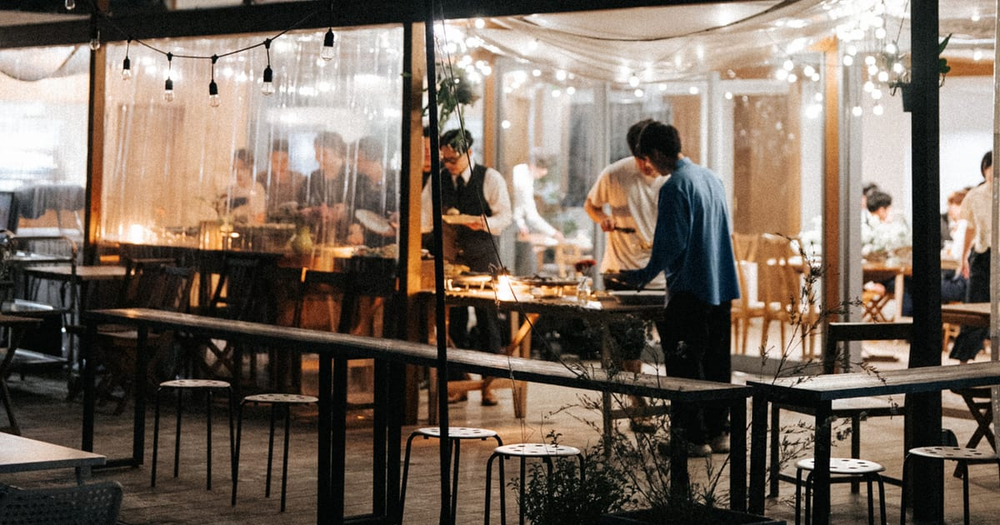
場所はある。あとは、中身と、回す人。
企画から設計、開けたあとの毎日まで。ひと続きで引き受けます。
About us
2011年から福山で場所をつくり、いまも自分たちで開けている SPDX と、「ローカルを地域価値にする」を掲げ、行政・JR西日本・民間の事業者とまちづくりを手がける umika。
設計だけ、企画だけではありません。どちらも自分たちの場所をつくり、自分たちで回してきました。だから、図面の前に「これは続くのか」から一緒に考えます。構想から設計、伝え方、開けたあとの毎日まで、間に人を挟まずに進みます。
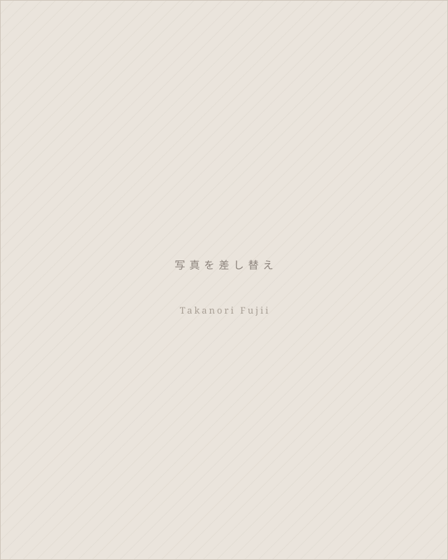
Takanori Fujii
株式会社SPDX 代表取締役
企画・運営・食・写真
福山市・中央公園の中にあるガーデンカフェ「Enlee」、撮影とイベントの舞台となる「KOKON」を運営。緑と光に包まれた空間で、丁寧な食や特別な一日をかたちにしてきました。地域コミュニティ「Good Day Neighbors」の運営にも力を入れています。
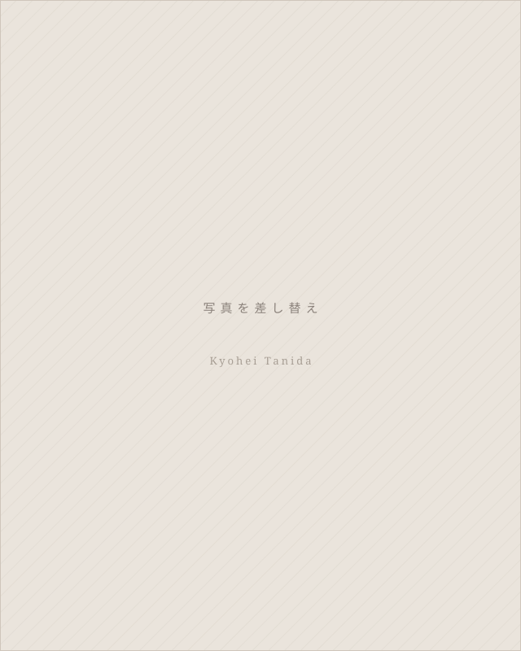
Kyohei Tanida
株式会社umika 代表取締役
建築・設計・ブランディング
尾道市瀬戸田の出身。東京の建築設計事務所ブルースタジオで、既存建物を改修して新しい価値を見出す仕事に携わる。帰郷後、福山のリノベーションスクールで出会った仲間と umika を設立。シェアキッチン「Little Setouchi」は企画から設計・施工・運営まで自ら手がけた。掲げるのは「長く愛される、人のための建築」。
What we do
01
Planning & Vision
その場所で何が成り立つのか。事業の組み立て、不動産の使い方、ビジョンや基本構想の策定支援まで。行政の計画づくりに関わってきた経験があります。
02
Design & Build
建物の特色を活かした設計と、予算の枠を先に決めてからの施工。空間のプロデュースから現場の管理まで引き受けます。
03
Branding & PR
つくった価値は、伝わらなければ無いのと同じです。名前・ロゴ・什器・サイン、紙とウェブ、発信の設計まで。計画の初期から並行して進めます。
04
Operation
予約・問い合わせ・清掃手配・仕込み発注・経理。所有はせず、運営だけを引き受ける形もつくれます。自分たちの店で毎日やってきたことです。
Projects
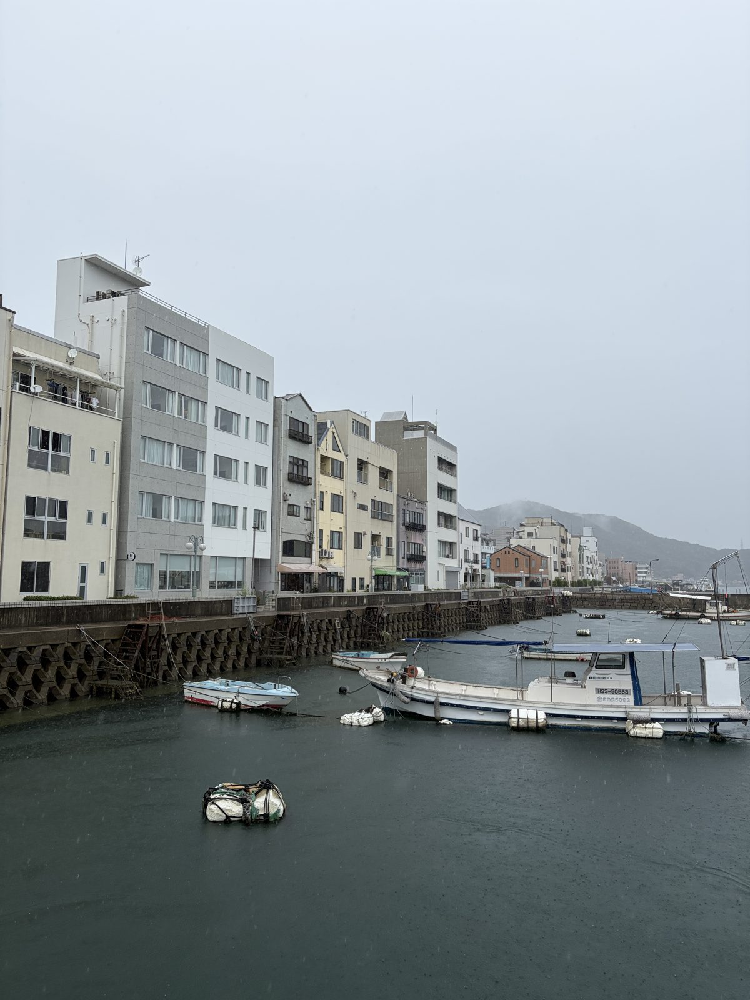
SPDX × umika
尾道市・土堂
尾道水道を望む一棟を、泊まる・作る・知るラーメンの拠点へ。企画＝藤井、建築＝谷田。進行中。
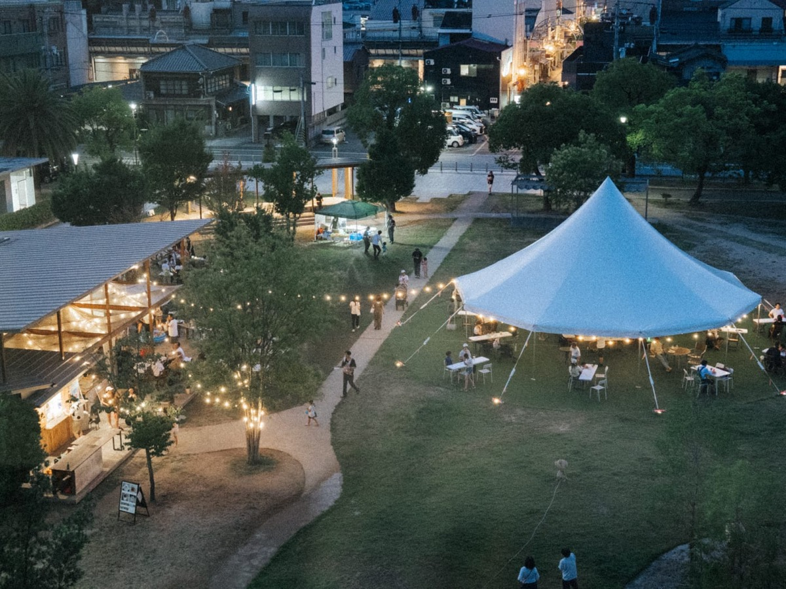
SPDX × umika
福山市・中央公園
公園を使ったイベントと地域コミュニティ。ビアガーデン、クリスマスマーケット。
SPDX × umika
福山市・中央公園
公園の一角に6畳の菜園をつくる企画。落ち葉で土をつくり、収穫して、焚き火で焼き芋を待つ。
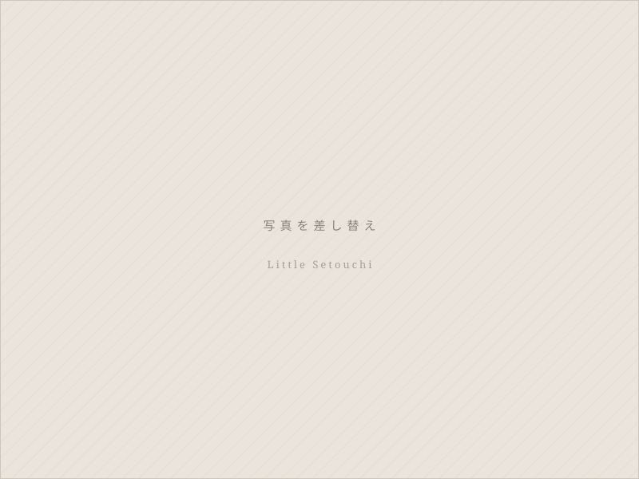
umika
福山・尾道
「はじめるを試せる」シェアキッチン。3店舗。設備と営業許可を整えて貸すことで、お試しで店を開ける。利用者の5組に1組が独立している。
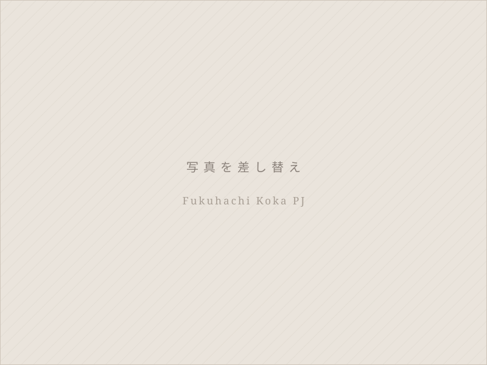
umika
福山市・今町
10年止まっていたJR福山駅東高架下を、個性のある店が集まる場所へ。JR西日本との共創。7区画のうち6区画が埋まった。
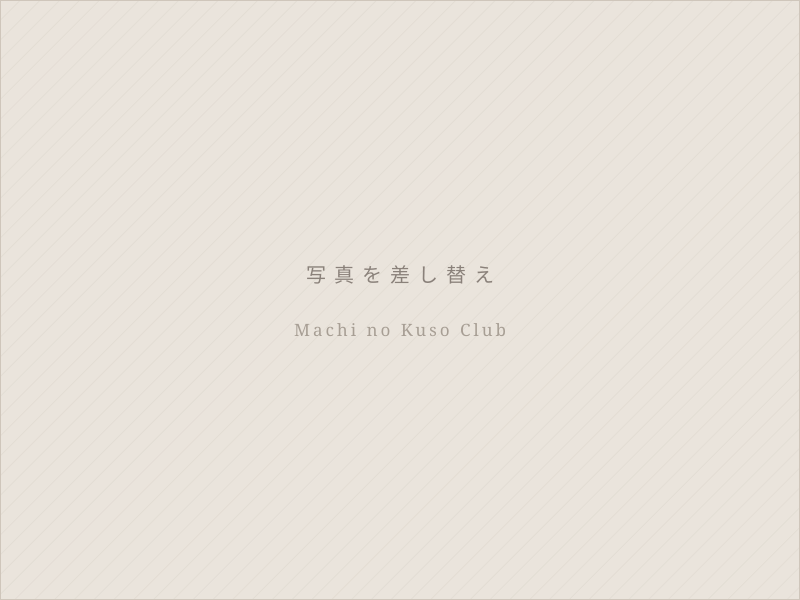
umika
福山市
商店街ごとにビジョンを描くワークショップ。市の事業として各エリアで開催し、まちづくりの担い手を育てる。
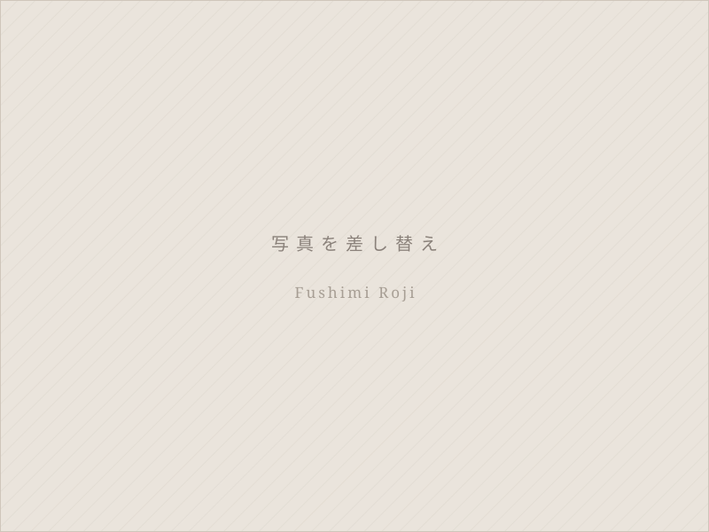
umika
福山市・伏見町
ほこみち制度を使い、道を広場として開く社会実験。地元のデニム企業と組んだ屋台は常設になった。
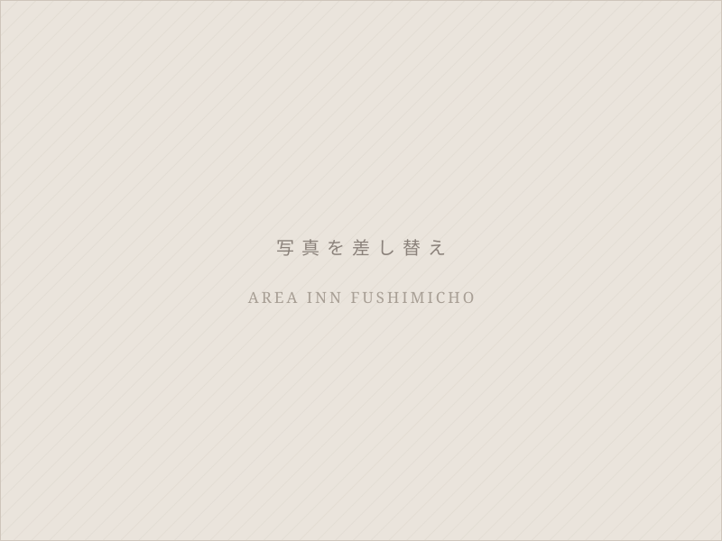
umika
福山市・伏見町
まち全体をひとつの宿に見立てる「まちやど」。自社で投資し、まちの中に客室を増やす。
SPDX
福山市・中央公園
公園の中のガーデンカフェ。ランチ・カフェ・貸切・ウェディング。
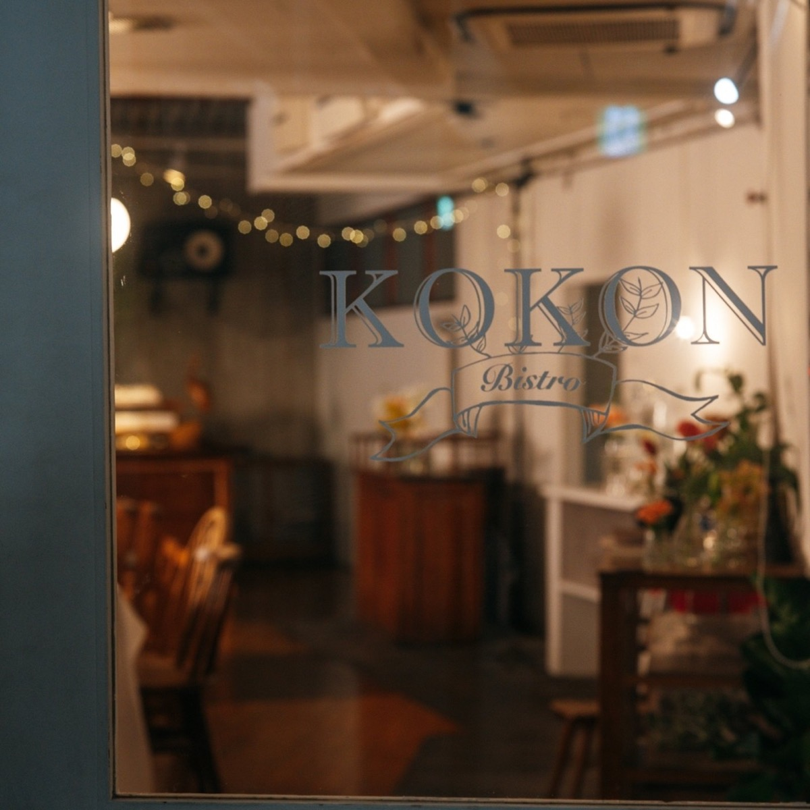
SPDX
福山市
2011年に始めた最初の場所。いまは撮影とイベントの舞台として、企画付きで貸している。
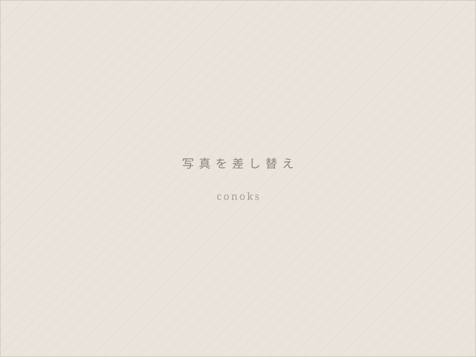
SPDX
福山市
2017年に開いたカフェ。2023年に事業を譲渡。
SPDX
福山市
2024年に立ち上げたウェディングブランド。瀬戸内らしいレストランウェディングを、会場・食・花・撮影まで一式で。
ほかに &Q cafe gallery（福山・高架下のカフェ＆ギャラリー）／ dog lounge yaburo（ドッグレストラン）／ 福山わいん工房 ／ Bunki（尾道のカフェ）／ 火の山再編整備計画（下関市）／ iti SETOUCHI 基本構想策定支援 ／ しおまち商店街ワークショップ（瀬戸内DMO）／ 瀬戸田映画祭